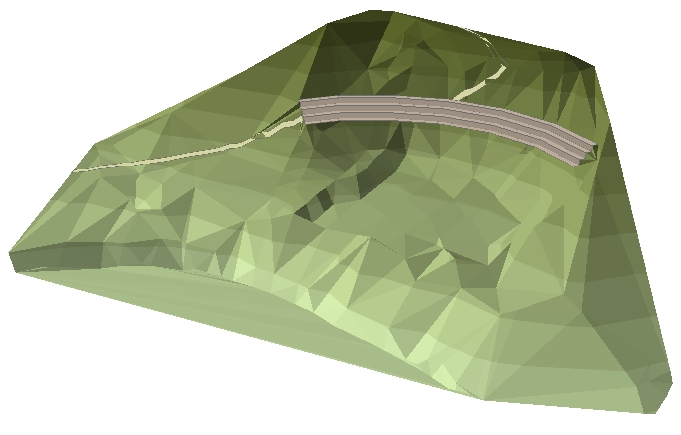
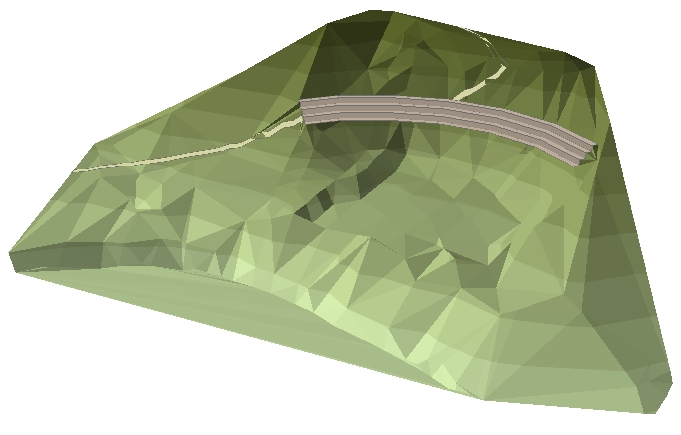
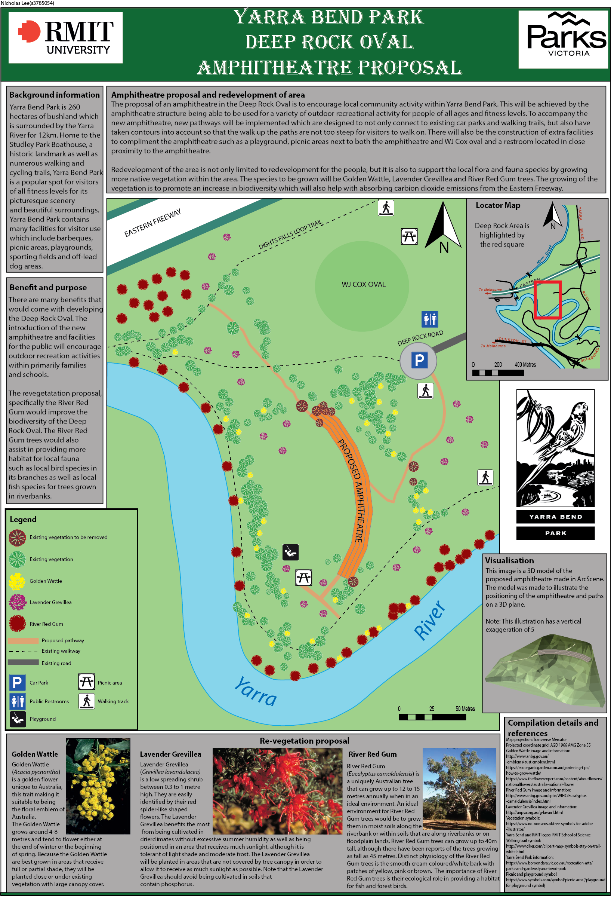
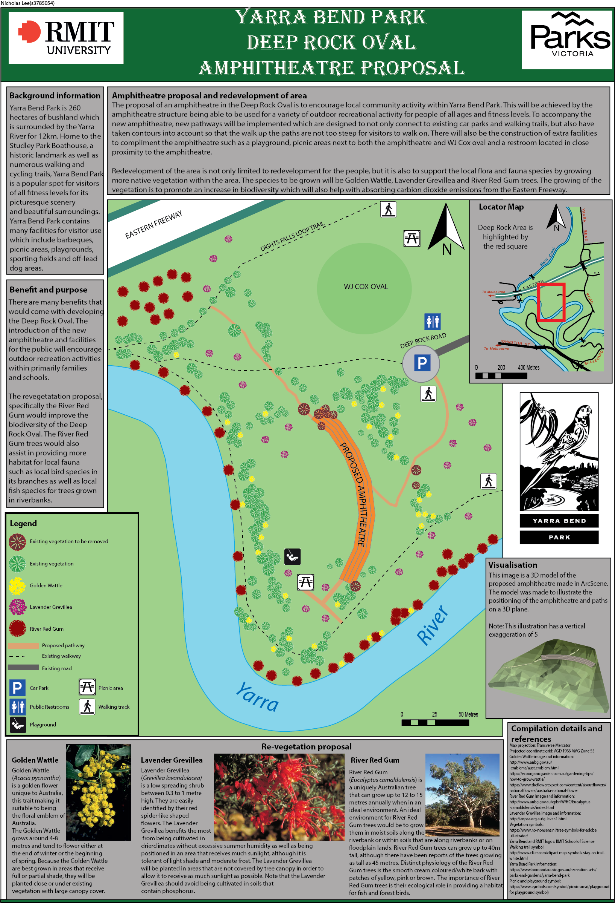

Overview
Geospatial Major Project
Applied Geospatial Techniques
Advanced SIS
Cartography
Distributed Mapping
UAS Operations
Acknowledgements
For the 2019 version of the course which I completed, the assignment was about the proposal of creating an amphitheatre at Deep Rock Oval located at Yarra Bend Park. The main deliverables of the subject consisted of producing:
The topographic survey map was created using surveying data obtained on the field using a total station at Deep Rock Oval, Yarra Bend Park. The topographic map was made using LISCAD.SEE and LISCAD.CAD. The 3D generated scene was created using the ArcGIS suite program ArcScene while the raw data was modified in ArcMap. The proposed pathway was created using ArcMap by using the GIS program to generate the pathway based on slope angle and the amphitheatre based on z-values. The final map used Adobe Illustrator to create the map along with ArcMap for exporting the 2D amphitheathre image and ArcScene for exporting the image of the 3D scene.
Note: If map display is too small, right-click the image and 'Open in new tab' to allow zooming of the map.
 

 

 |
 |
 |
|---|---|---|
|
RMIT City Campus Address:
124 La Trobe St, Melbourne VIC 3000 |
Email Nicholas Lee here:
s3785054@student.rmit.edu.au |
RMIT university landline:
(03) 9925 2000 |